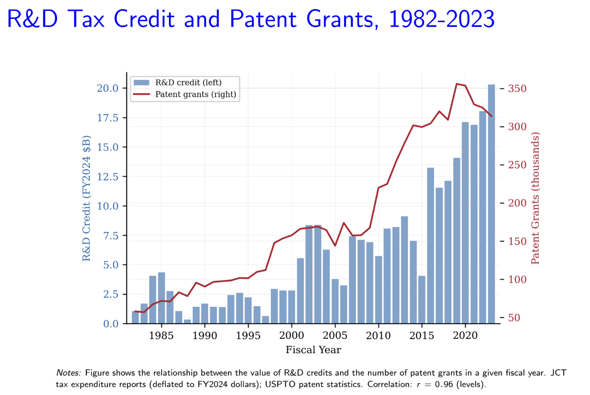
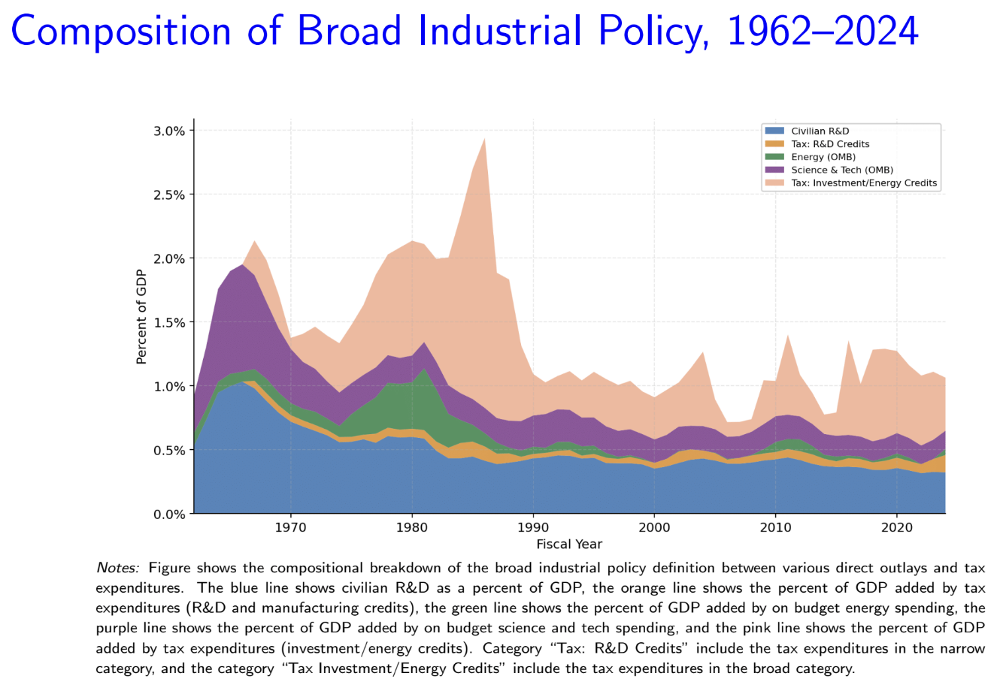

// RESEARCH PROJECTS
My research endeavors primarily revolve around the comprehensive analysis of U.S. Industrial Policy and Fiscal frameworks. By utilizing sophisticated Python-based toolsets including Pandas, NumPy, and SciPy, I have processed multi-source federal datasets spanning over six decades to identify structural transitions in policy design and implementation.



The objective of this longitudinal study is to benchmark domestic intervention levels against international standards while linking policy intensity to sectoral value-added growth. This quantitative approach facilitates a more nuanced understanding of how government spending influences long-term innovation and economic competitiveness.